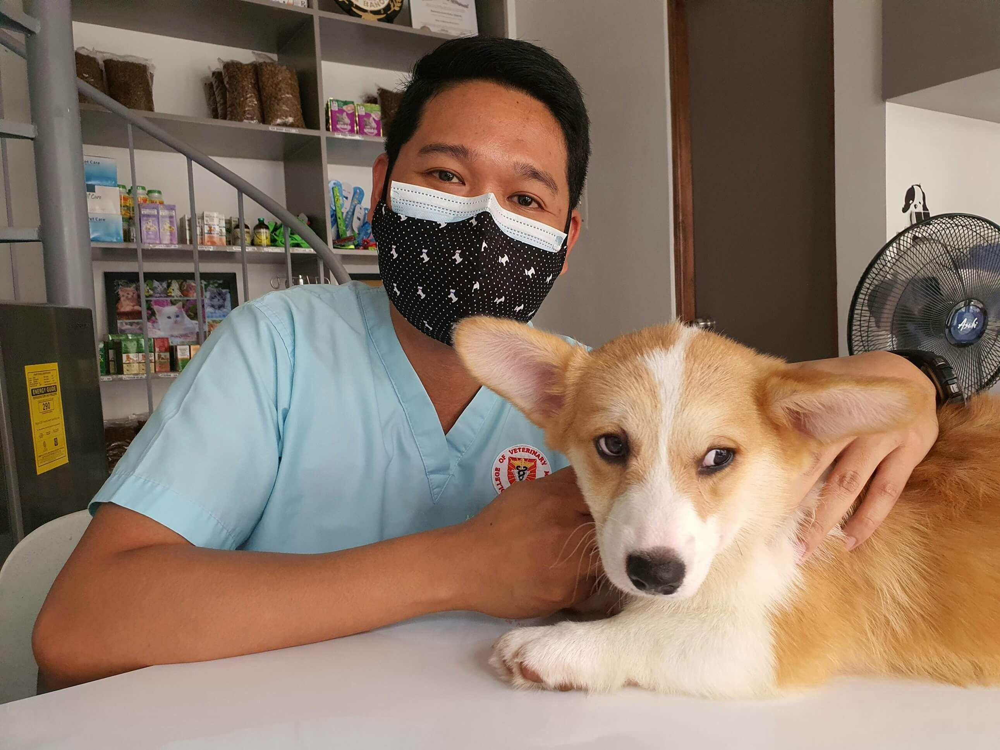

Kartopu Veteriner Kliniği’nin ekibi, yalnızca mesleki başarılarıyla değil, aynı zamanda hayvan sevgisiyle de öne çıkar. Bizim için en iyi tedavi, şefkat ve bilgeliğin birleşimidir.
Küçük hayvan hastalıkları konusunda uzman olan Dr. Elif, 15 yılı aşkın deneyime sahiptir. Özellikle iç hastalıkları ve koruyucu hekimlikte uzmandır. Hayvan hakları konusunda gönüllü çalışmalar yürütmektedir.
Veteriner cerrahisi alanında uzman olan Dr. Murat, ortopedik ve acil operasyonlarda deneyimlidir. Başarılı ameliyatlarıyla tanınır ve genç meslektaşlarına mentorluk yapar.
Teknikerlerimiz, tedavi ve bakım süreçlerinde hekimlerimize destek verir, aynı zamanda dostlarımızın günlük ihtiyaçlarını titizlikle karşılar.
Kartopu ekibinin en genç ve enerjik üyeleri olan asistanlarımız, dostlarımıza ilgi ve sevgiyle yaklaşarak güvenli bir ortam yaratır.